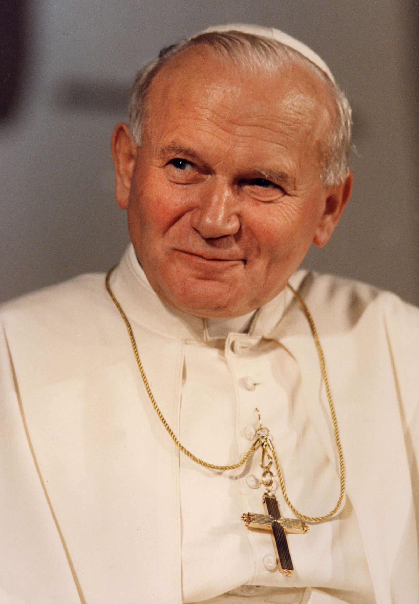

Cronologia Familiar
Juan Pablo II

Nombre: Karol Józef Wojtyła
Nombre: Karol Józef Wojtyła
Fallecimiento:2 de abril de 2005 (84 años)Palacio Apostólico, Ciudad del Vaticano
Padres: Karol Wojtyła, Emilia Kaczorowska
Información religiosa:
Ordenación sacerdotal: 1 de noviembre de 1946
por Adam Stefan Sapieha
Ordenación episcopal: 28 de septiembre de 1958
por Eugeniusz Baziak
Proclamación cardenalicia: 26 de junio de 1967
por Pablo VI
Biografia
Resumen
Juan Pablo II, nacido como Karol Józef Wojtyła el 18 de mayo de 1920 en Wadowice, Polonia, fue el papa número 264 de la Iglesia católica y soberano de la Ciudad del Vaticano desde el 16 de octubre de 1978 hasta su fallecimiento el 2 de abril de 2005. Fue el primer papa polaco y el primero no italiano desde 1523. Su pontificado, de casi 27 años, es el tercero más largo en la historia de la Iglesia católica. Antes de su elección como papa, Wojtyła fue obispo auxiliar y luego arzobispo de Cracovia. Participó activamente en el Concilio Vaticano II, contribuyendo a la elaboración de la constitución pastoral Gaudium et spes. Durante su pontificado, Juan Pablo II fue una figura clave en la lucha contra el comunismo, especialmente en su Polonia natal, y desempeñó un papel importante en la mejora de las relaciones de la Iglesia con otras religiones, incluyendo el judaísmo y el islam. Sobrevivió a dos intentos de asesinato, uno en 1981 y otro en 1982. Fue conocido por su extenso trabajo pastoral, realizando 129 viajes internacionales y promoviendo la canonización de 483 santos y la beatificación de 1,340 personas. Además, hablaba múltiples idiomas, incluyendo polaco, italiano, francés, alemán, inglés, español, portugués, ucraniano, ruso, croata, esperanto, griego antiguo y latín. Juan Pablo II fue canonizado el 27 de abril de 2014 por el papa Francisco.
Contexto Historico
Primera mitad del siglo XX
 Karol Wojtyła, quien más tarde sería conocido como Juan Pablo II, nació en 1920 en Polonia, un país marcado por fuertes conflictos políticos y sociales. A lo largo de su vida, fue testigo y protagonista de grandes transformaciones históricas del siglo XX:
Karol Wojtyła, quien más tarde sería conocido como Juan Pablo II, nació en 1920 en Polonia, un país marcado por fuertes conflictos políticos y sociales. A lo largo de su vida, fue testigo y protagonista de grandes transformaciones históricas del siglo XX:
Primera mitad del siglo XX
Durante la ocupación nazi de Polonia, Wojtyła vivió la represión y violencia del régimen. Estudió en seminarios clandestinos y trabajó en fábricas para evitar ser deportado.
Elección como Papa y el mundo de finales del siglo XX
Fue elegido Papa en 1978, en un contexto de Guerra Fría, cuando el mundo estaba dividido entre el bloque capitalista (EE. UU. y aliados) y el bloque comunista (Unión Soviética y aliados).